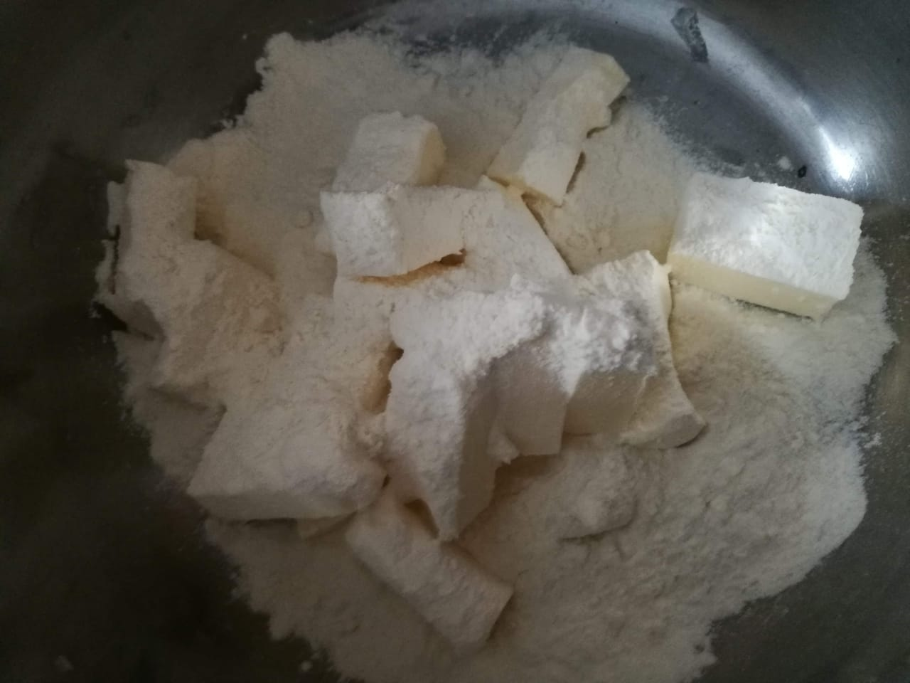
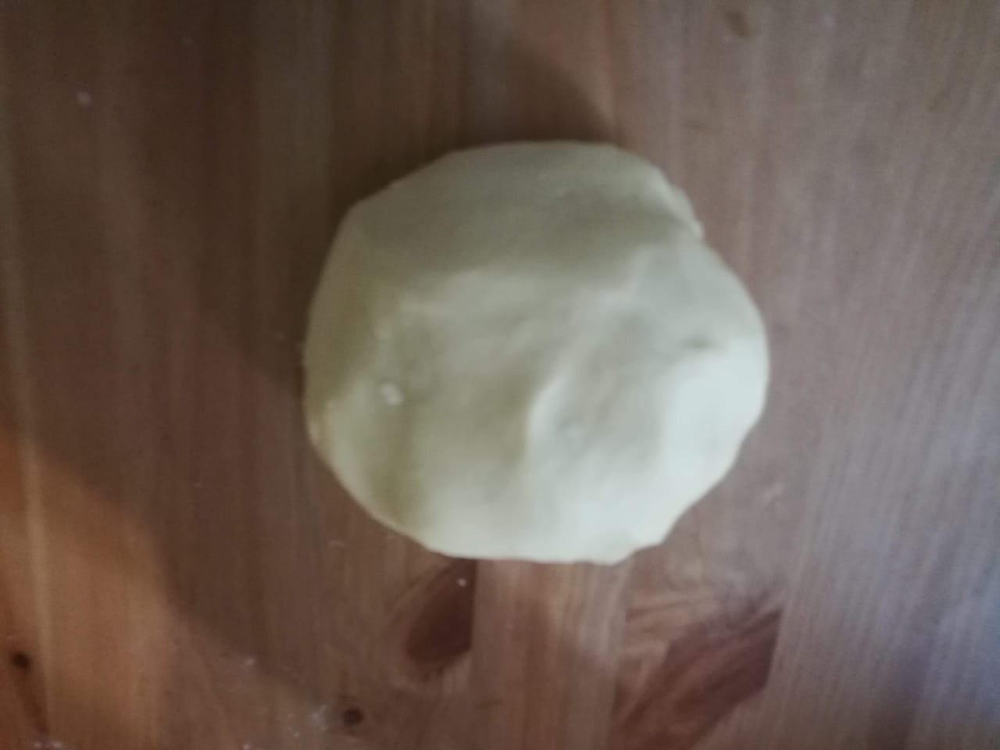
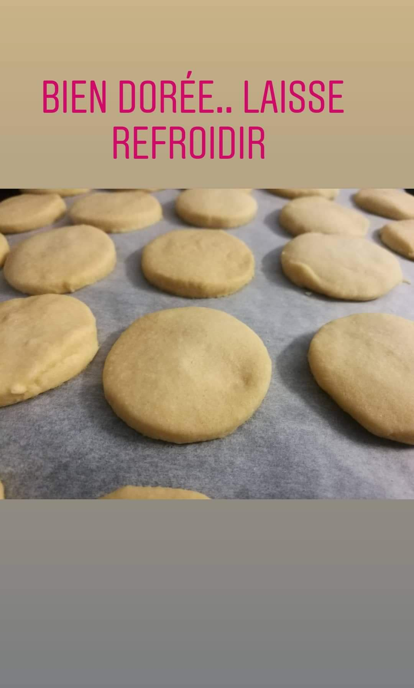
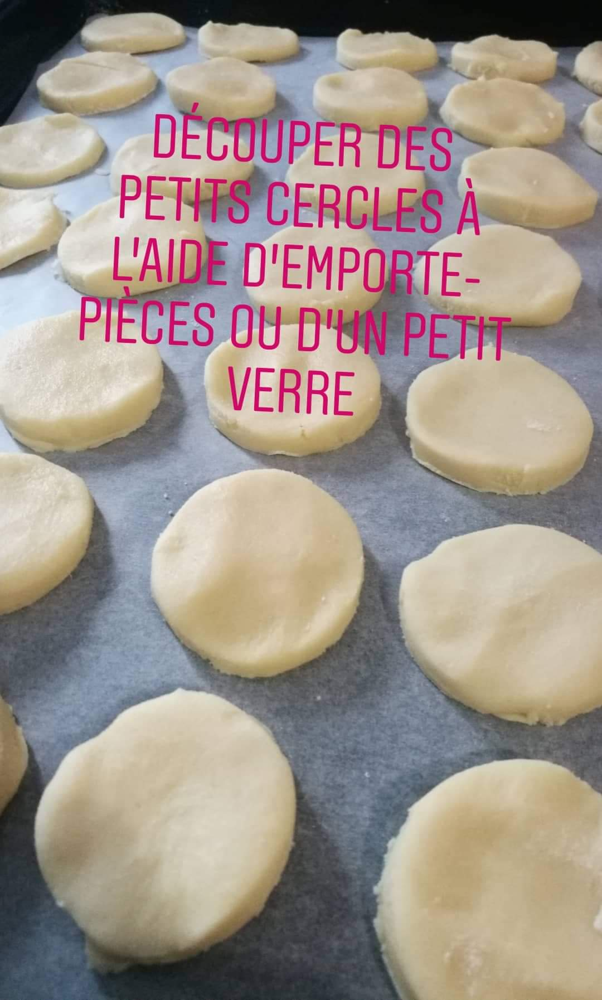
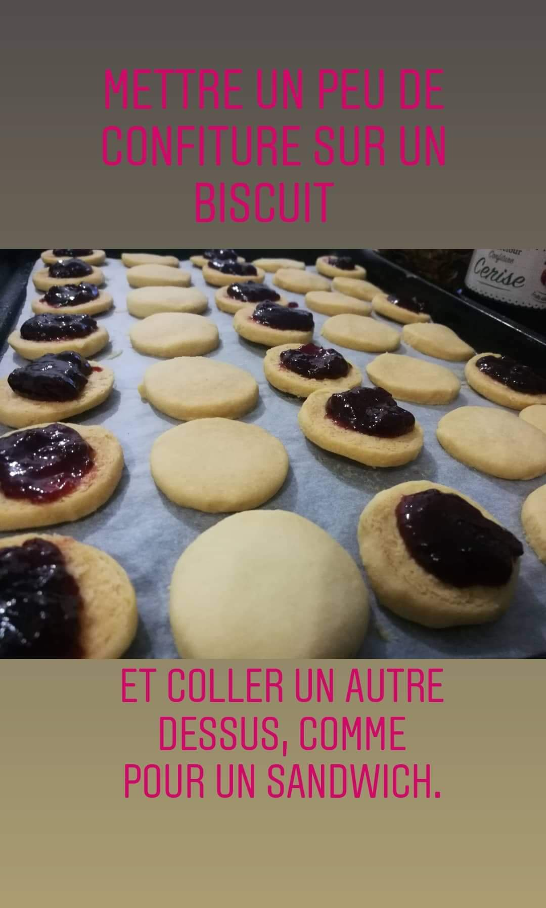

Directions
Cut butter into small cubes and leave it in a room temperature condition for at least 1 to 2 hours to soften. Might take longer if you live in cold countries.
Sift flour in a large bowl and then rub butter into flour with your finger (little advice: work the dough with hand since your hand will release heat and thus melt butter into flour easily)
Take your time to incorporate the butter until it comes together in a ball. Do NOT add water not even a drop and do not knead the dough.
Add butter if the dough is too dry and adjust flour if too soft and balance the ratio.
The dough should be soft and supple. Set it aside for some 15 mins
Flatten the dough and roll out carefully on a clean surface or use your hand to flatten the dough
Sprinkle with small amount of flour and roll out until about 1cm thick
Preheat oven to 180 °C before you start cutting dough.
Use sharp cookie cutter to punch out circles out of dough (or any shape you like)
Transfer your circles onto a baking tray lined with parchment paper.
Bake for about 30 min at 150 ° C until cookies are golden.
Remove the tray and let them cool down for around 15 min and make sure cookies are cooled before you remove them
Next, divide your cookies into two equal batch and fill one batch with jam in the centre of the cookie and then top each with a plain cookie.
Prepare your icing last
Mix the icing sugar and water
Stir until it is thick enough to coat the cookies.
Stir in a couple of drops of the food colouring and lemon juice
Keep your sandwiched cookies close by on a wire rack
Then drizzle the glaze over the cookies to coat and let the icing dry
Allow icing to set completely before removing from wire rack




Icing preparation:

Enjoy!!!